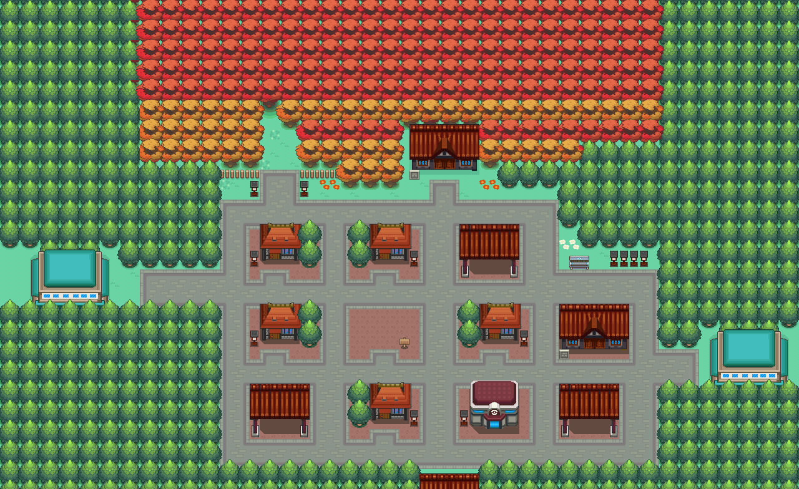

075 迷路的小锯鳄
一句话目标：在缘朱市帮迷路的小锯鳄找到它的主人。
接取地点
准备条件
- 脚本未检查主线旗标 4246，无明确门槛。
- 需先与主人对话（旗标 2680），否则无法把小锯鳄带回。
操作步骤
- 到缘朱市内的室内会场（55:34）找小锯鳄的主人（3,9）。她说刚才小锯鳄还在身边，转眼就不见了：「你有看见一只小锯鳄吗？明明刚才还在我身边的……转眼间却不见了。」对话后置旗标 2680。
- 到缘朱市城区（55:5）找到游荡的小锯鳄（约 51,36）并调查。若尚未与主人对话，只会得到「小锯鳄似乎在寻找什么……」（另有「小锯鳄:鳄鳄！」叫声）。
- 与主人对话后再去调查小锯鳄：旁白「小锯鳄回到精灵中心了！」，小锯鳄从城区消失（旗标 2681）。事后再回 55:34，主人身旁会出现一只小锯鳄。
- 回到主人处复命。
交付检查
与主人再次对话，主人道谢并交出谢礼。
奖励
- 经验糖果S 0537 ×2、卡比丘 0748 ×1
- 8 点 BracerPoints、6000$
容易卡住的位置
- 必须先和主人对话（旗标 2680），否则调查小锯鳄没有任何进展。
- 小锯鳄从进入城区起就可见，但“带回”的判定在 55:5 的那只对象上（脚本 0x08F5B70E）。
- 主人对白提到的“缘朱舞场”只是解释小锯鳄乱跑的危险，不代表小锯鳄在那里。
- 任务无独立接取旗标（accept=complete=2682），谢礼与完成在同一次复命对话内。
来源与待补字段
- 来源包：data/quest_packets/075.json。
- 待补：55:34 的室内会场在数据里地图名仅作“缘朱市”，未给出建筑名；任务目录 current_description 说“夏日祭”，对白提到“缘朱舞场”，两者关系未明。
地点地图
共享RGB底图；点击可缩放定位。数字对应本页相关地点，不代表地图上全部事件。
缘朱市

1 迷路的小锯鳄（3,9）
缘朱市

1 迷路的小锯鳄（51,36）